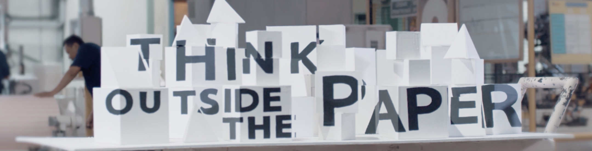
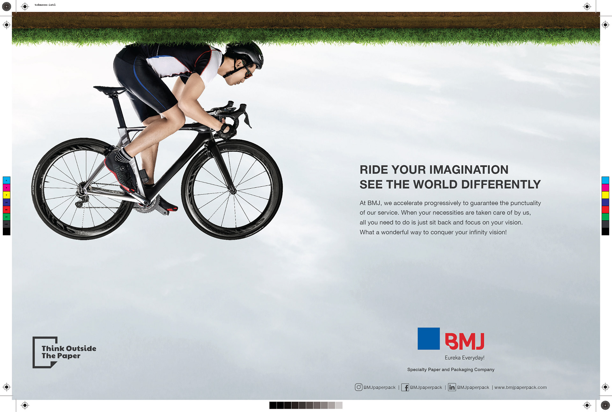
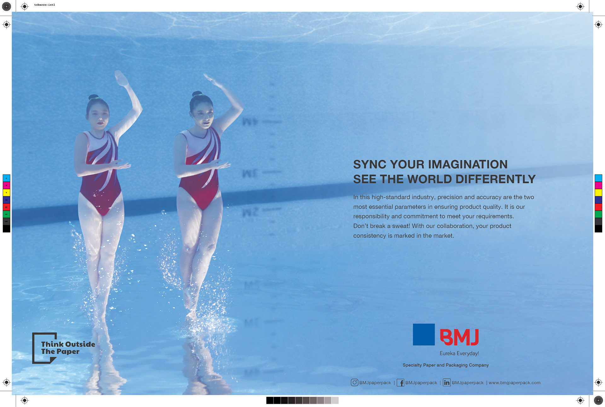
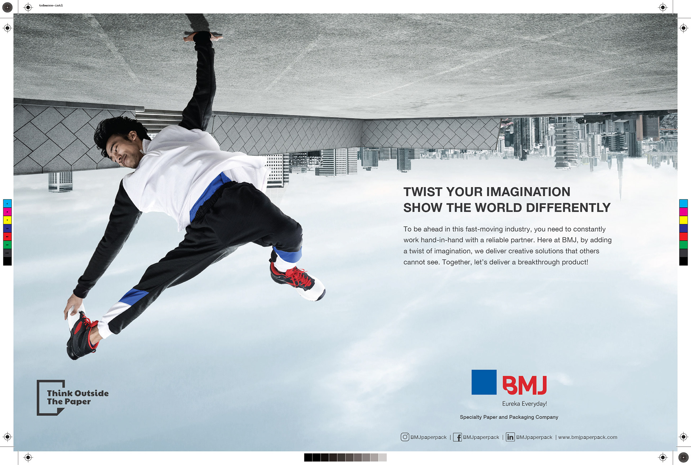
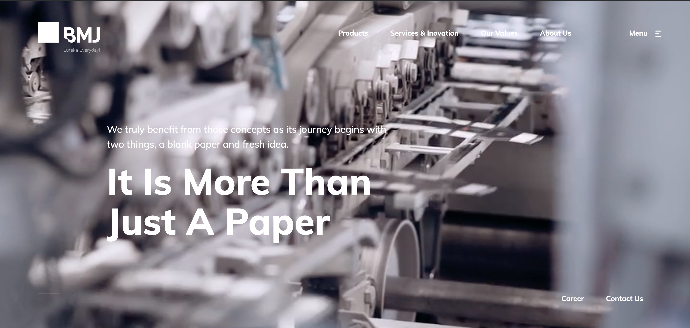
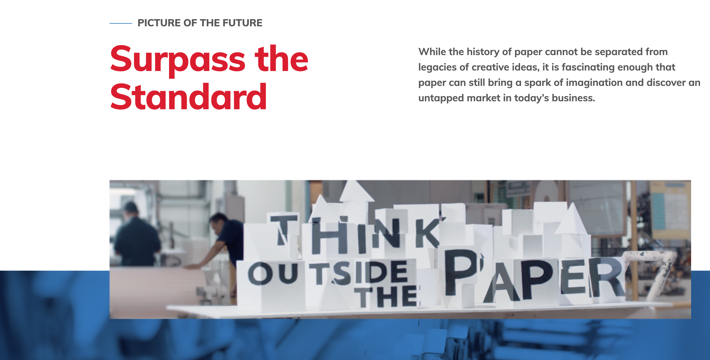
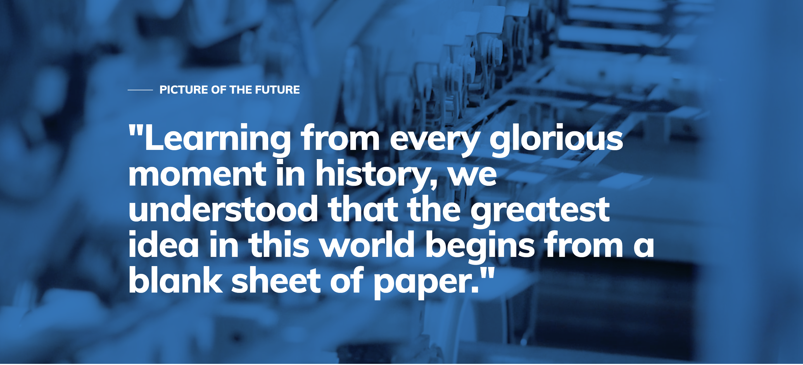
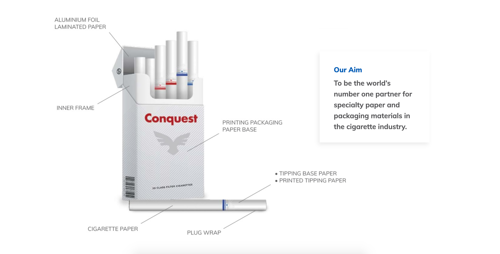
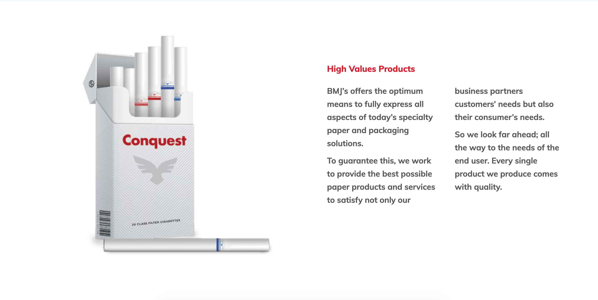

Think Outside the Paper
An ordinary material can carry an extraordinary idea.
Building a single brand thought that could live across a manifesto, print advertising, and a corporate website.

Find a philosophy bigger than a product
BMJ operates in a highly specialised paper and packaging category. The writing challenge was to express the company's point of view in a way that went beyond specifications, materials, and manufacturing processes.
A familiar phrase, rewritten for the brand
I developed Think Outside the Paper as the organising idea. It borrows the invitation of “think outside the box,” then makes paper itself the creative starting point. The line suggests imagination and possibility in a category often discussed in purely functional terms.
One thought, several expressions
From the manifesto to a print series built around imagination and the language of the corporate site, the same thought needed to stay consistent while taking different shapes. This is the kind of copywriting I enjoy: establishing a voice that remains recognisable across very different formats.
See the work.
Original campaign imagery and films from Dan Pradana's archive, hosted in this repository.








